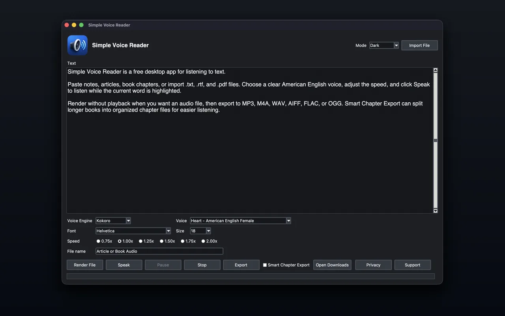

Review long documents
Paste a draft, import a PDF, or open a text file and listen through it while the current word is highlighted in the editor.
Simple Voice Reader reads pasted text, TXT, RTF, and PDF files aloud in a focused app for iPhone, iPad, Mac, and Windows. It is for people who want to review drafts, listen through long documents, export spoken audio, or give their eyes a break without setting up a larger media workflow.
Some documents are easier to understand when you can listen, pause, change speed, and keep your place visually as the words are spoken.
Paste a draft, import a PDF, or open a text file and listen through it while the current word is highlighted in the editor.
Choose an American English voice, set the speed from 0.75x to 2.0x, pause when needed, and resume from the current position.
Render audio without real-time playback, choose a destination, and use Smart Chapter Export when a document has recognizable chapter structure.
The main screen keeps the text front and center, with voice, speed, font, import, export, and light or dark appearance controls close by.


Simple Voice Reader is intentionally direct: get text into the app, pick how it should sound, listen, pause, resume, or export.
Place the cursor anywhere in the text and start speaking from that point onward.
The current word is highlighted while the text is read aloud so your eyes can track the audio.
The submitted Mac build includes American English Kokoro voices and selected normal American English Apple system voices.
Drop or choose TXT, RTF, and PDF files, or paste directly into the text editor.
Choose a font and font size from the system fonts available on your Mac.
Export rendered speech to popular audio formats and choose the folder and file name that fit your workflow.
The goal is not to replace full audiobook studios or cloud narration platforms. It is a practical Mac reader for everyday documents.
Drafts, research notes, book chapters, PDF handouts, RTF files, plain text files, and any long passage where listening helps you stay with the material.
It is not a commercial audiobook mastering suite, voice marketplace, or editing timeline. It is a focused reader and exporter.
Text-to-speech conversion with Kokoro and Apple system voices is performed on the user’s Mac. Simple Voice Reader does not send text, documents, or rendered audio to Walter Claw Software or to a cloud text-to-speech service. macOS may contact Apple only to download system voice assets selected by the user.
Read the privacy policy for details.
Short answers about release status, file types, voices, export, and support.
Yes. It is available now from the Apple App Store for iPhone, iPad, and Mac, and from Microsoft Store for Windows.
Yes. Simple Voice Reader is a free download.
You can paste or type text directly, or import TXT, RTF, and PDF files.
Yes. Export lets you choose the file name, folder, and popular audio format. Smart Chapter Export can create separate files from detected chapters.
The Apple editions use American English Apple system voices. The Windows edition supports Kokoro and installed American English Windows voices.
Use the Simple Voice Reader support page or email support@walterclawsoftware.com.
Email support with the kind of text you want to listen to, the file type, and whether you need live speech or exported audio. You will get a plain recommendation.
{kind=link}